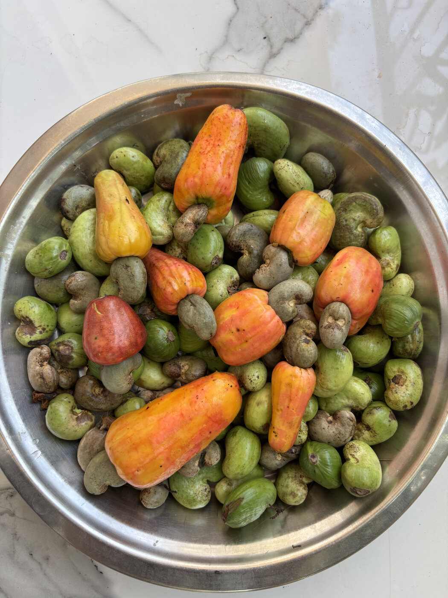
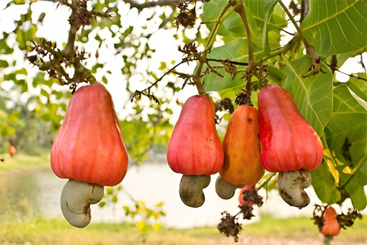

Before the heat settles fully over Goa, cashew trees begin to change colour. The fruit blushes from green to gold and red; below each apple, the familiar curved nut waits.
The season is a reminder that an ingredient can carry more than one story. There is the fruit, bright and quick to spoil, and the nut, which asks for patient handling before it reaches a pantry.
For many families, the harvest is also a calendar. It marks a stretch of hot afternoons, full baskets, and the practical work of sorting what can be used now from what can be kept.
“The season does not arrive all at once. It ripens, basket by basket.”
What stays with us is the sense of abundance paired with care. Nothing is rushed simply because there is plenty. The fruit is noticed, the nut is respected, and the work is shared.



The stories we hope to add next are the ones told by the people who grow and gather these crops. Those profiles need their own voices, photographs and permission — never borrowed from assumption.